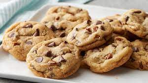

Chocolate chip cookies are a household favorite, a timeless classic, an unparalleled snack, warm, cold, dunked in milk, in dough form, or in baked form. No one can resist the comfort of a chocolate chip cookie and everyone has their favorite recipe whether it’s on the back of the yellow Toll House bag or scribbled in your grandmother’s recipe book.
Like many of you, I’ve searched far and wide for the perfect chocolate chip cookie recipe: the best chocolate chip cookies, a recipe I can bake again and again for years. I’ve lost sleep, I’ve burnt dough, I’ve tested and retested and retested… and retested countless times. And I’m so happy to report that I finally found a chocolate chip cookie recipe that I’ll treasure for years. And I know you’ll enjoy these cookies too!